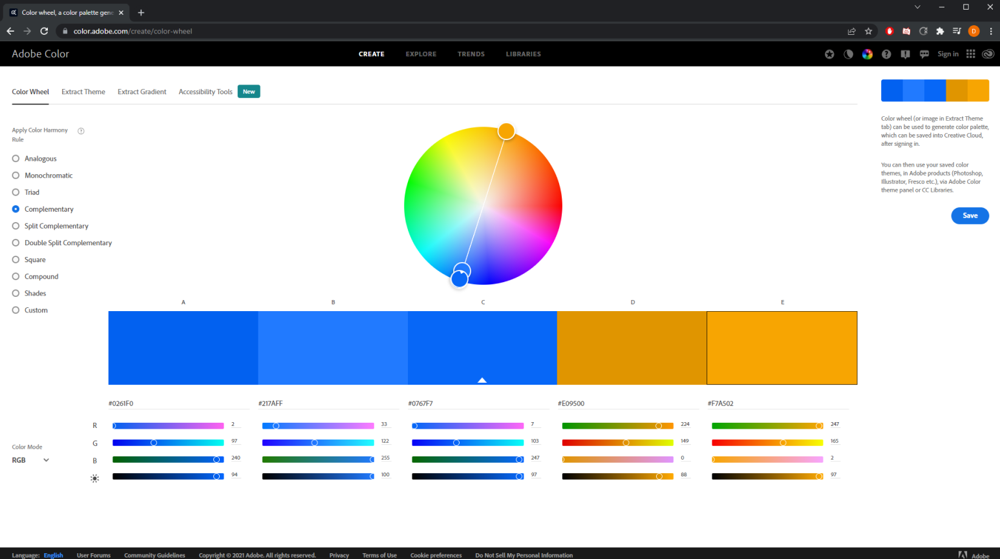
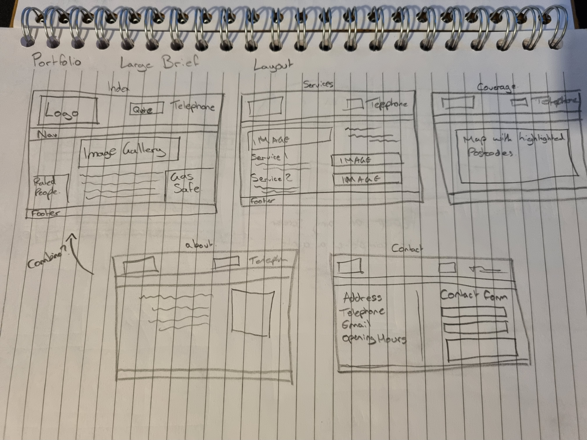
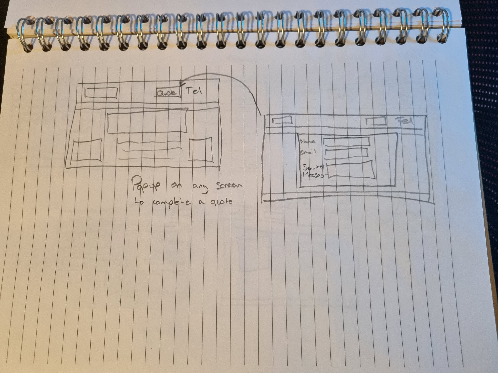
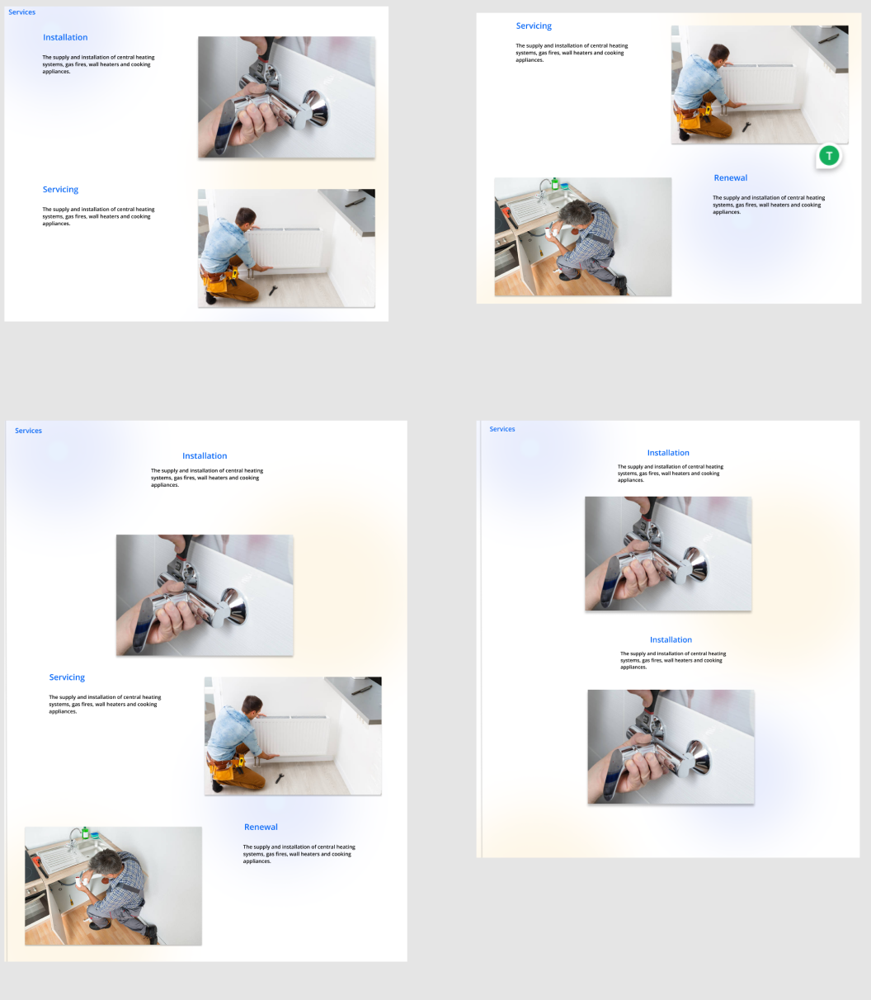
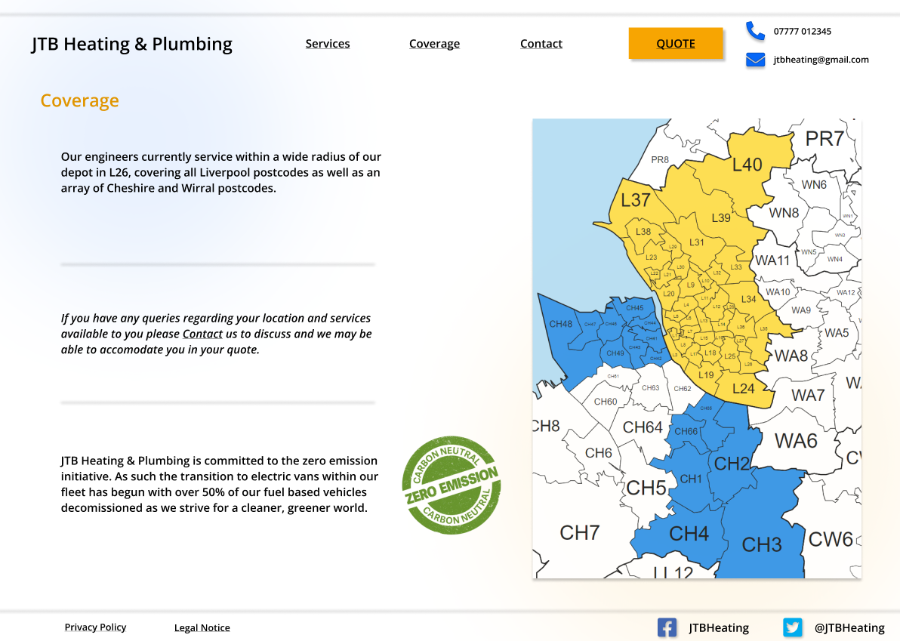
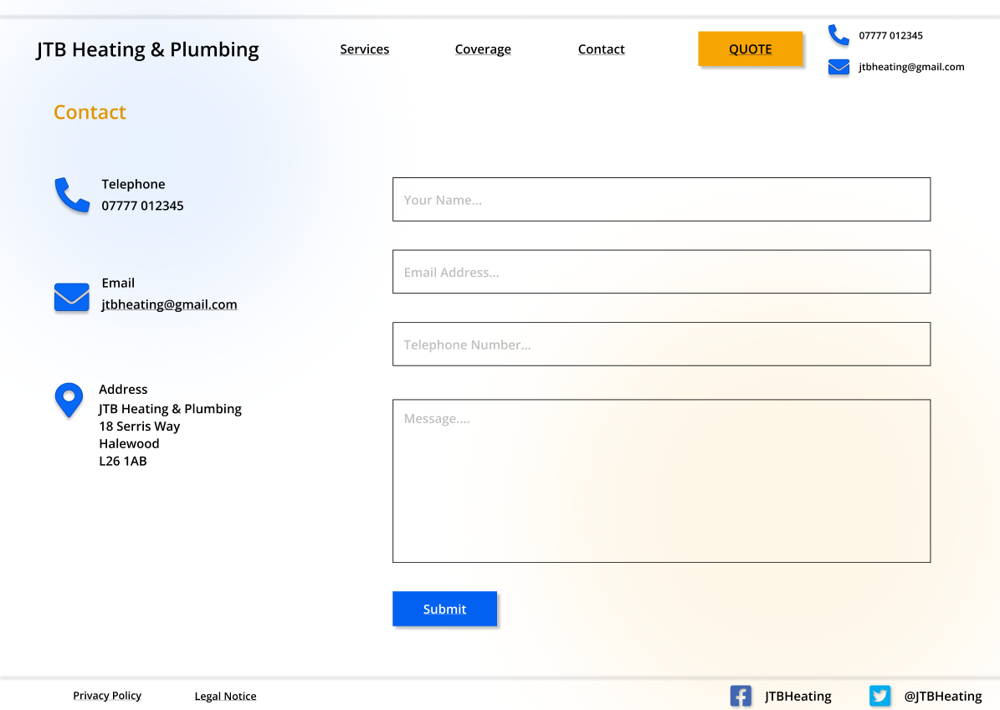
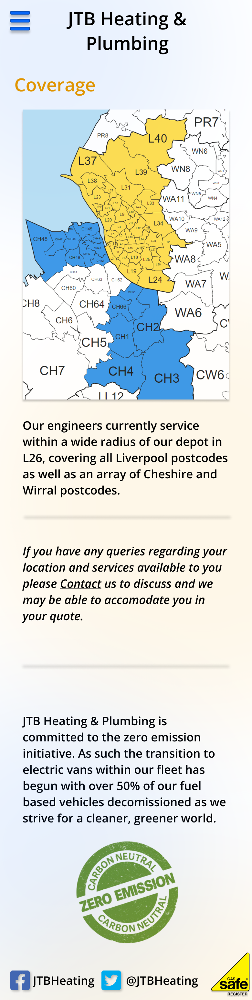
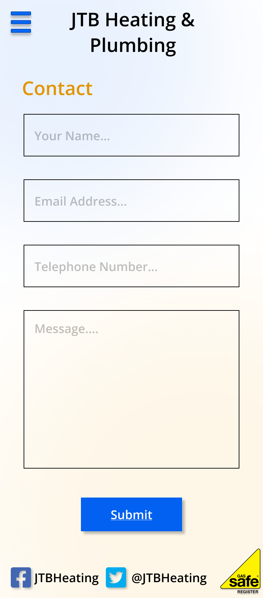
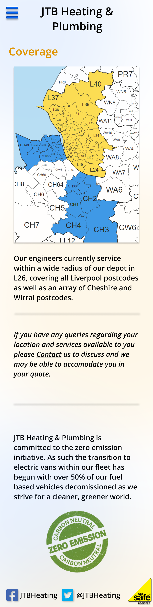
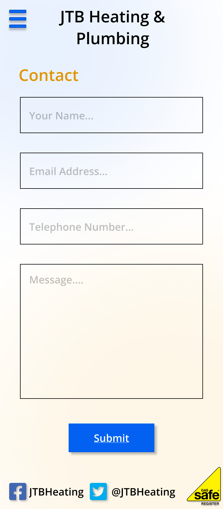

The Brief
In an effort to support small local businesses during the pandemic I was tasked with choosing a live website of a business local to me that I could redesign to better meet current standards and explore improvements that would help them. To do this I first had to analyse the chosen site and identify:
- Who are the users of the site?
- What are the goals of the site?
- What is wrong with the current site and its potential problems?
- What are the potential solutions?
The website chosen was of a business that I had passed over during the pandemic when I was searching for plumbing services. An assessment of this site provided the following answers to my tasked brief:
- Customers looking for plumbing work.
- To generate business, inform users of their services, provide contact details and promote themselves via third party ratings.
- Dated and basic look. No mobile design. Information is spread out over multiple pages.
- Graphical redesign to make it look more professional. Create a mobile design. Page condensing to require less clicks from the user. Make selling points such as services more prominent.
Additional requirements outside the scope of the task were also considered as further improvement areas. These included:
- Quotation and contact options need to be easily visible as the website is only used to make contact with customers but does not generate income on its own.
- Gallery/Services/Testimonials should be on the front page. To set this plumber apart from others their work needs to be seen without excess clicks.
- Explore alternative colour theory to brighten the mood of the website while still maintaining the "blue" that can be associated with gas flames and water.
Ideation
Upon analysis of the original website (pictured), it was determined that there were too many pages with critical information spread too widely around the site. As a result all of the pages of the website were assessed and excess pages removed (as shown by a red border). The information on these cut pages would be relocated onto the newly designed main pages.
The final site layout would consist of an index page, a services page, a coverage page and a contact page with a popup across all pages for serving quotations to the user.
Additionally, desk research was conducted on other local businesses in the plumbing industry to get a better understanding of what is currently working on their websites. The websites analysed included:
A new colour scheme was chosen with a complimentary shade of orange to be used with a new lighter shade of blue. These colours would be used sparingly to allow the content of the website be the main focus.
A paper wireframe was then created for how the site layout might appear in addition to the structure of the various pages that were envisioned. At this stage the website numbered five pages, however, one was cut and combined with the index page.
A final addition of the quote popup was wireframed. This popup would appear at the same location on any page when any form of purchase or quotation button was clicked. This popup would serve as a more indepth version of the contact page where the user could select a specific product or service to enquire the site owner about.
Prototyping
A full working prototype was created for this design on Figma which displayed the functionality that was envisioned for the website.
The design of the website has been altered dramatically, with a much brighter look while still using an appropriate colour scheme. Additionally, an aurora background was used to subtley draw the users attention from top left to bottom right. This was further utilised on the services page to draw the users eye from image to image.
To meet the stated brief tasks several pages were condensed to reduce the amount of clicks that the user would have to make. This included bringing the "about" section, the testimonials via a third party site and their "Gas safe" registry onto the home page. Additionally, an image gallery showcasing potential work was given a large display area and would link to the services page when clicked. The privacy policy and legal notice were moved to the sub nav in the footer to reduce confusion in the main nav, and social links were created as the original site claimed that most of their business was done through word of mouth.
The use of white space combined with the aurora background serves to draw the users eyesight back and forth across the page to each of the services on offer.
Additionally, a quotation button was placed next to every service so that the user would not need to scroll back to the top of the page to click the original quote button in the nav bar.
Alternative layout options were also explored and could be experimented with should the site be made available to the public.
The coverage area of the website was simplified with the long list of covered postcodes being removed and instead a custom map was created where the included postcodes of merseyside were coloured in.
The company address and contact details were moved to a designated contact page and a submittable form was created that would allow the user to contact the business directly from the website.
A mobile layout was also designed as the original site was missing any mobile functionality. Desk research concluded that a large portion of users when looking for plumbing work do so in an emergency and are therefore using their mobile phones. As such, this functionality would open up a new avenue of sales.
 



Final Build
While the task was interpretted as mostly a design and UX challenge, the website was also created in code and hosted online as a proof of concept to show that the ideas envisioned are translatable. The full build can be found here.
A side by side comparison of the coded website and the Figma design can be seen below.